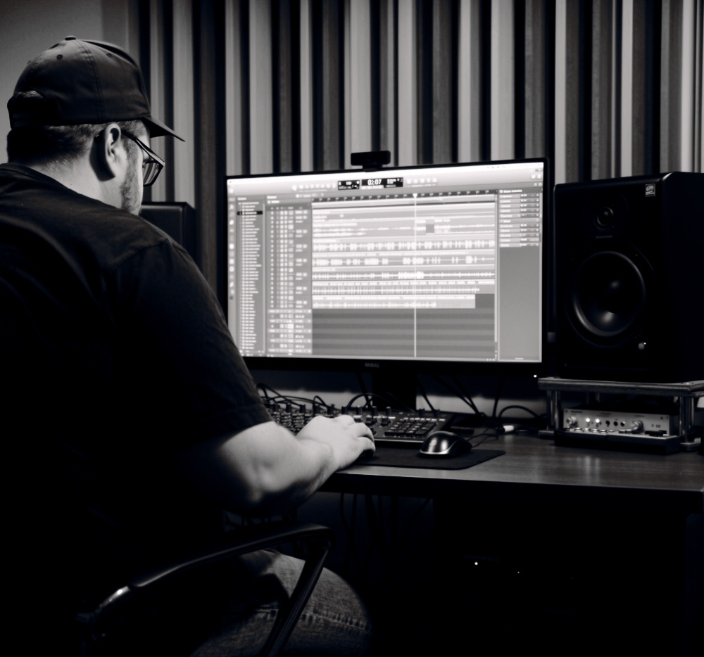
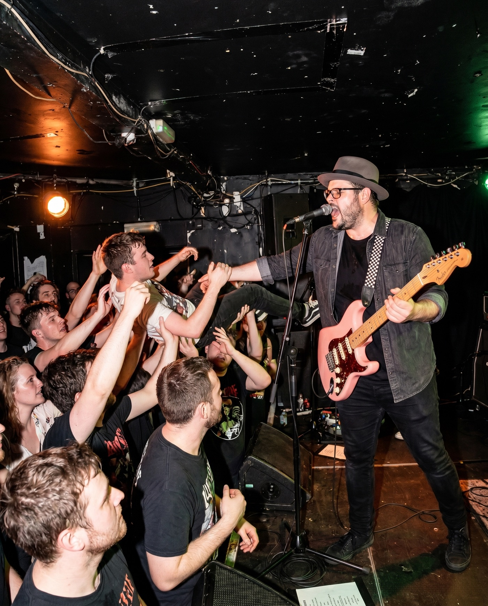
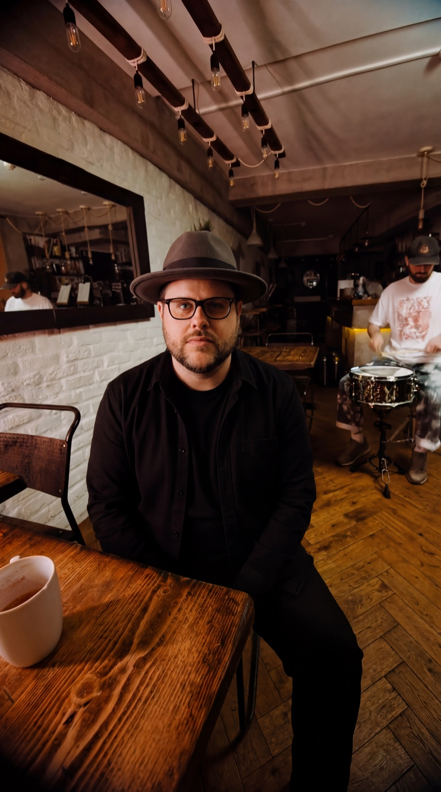
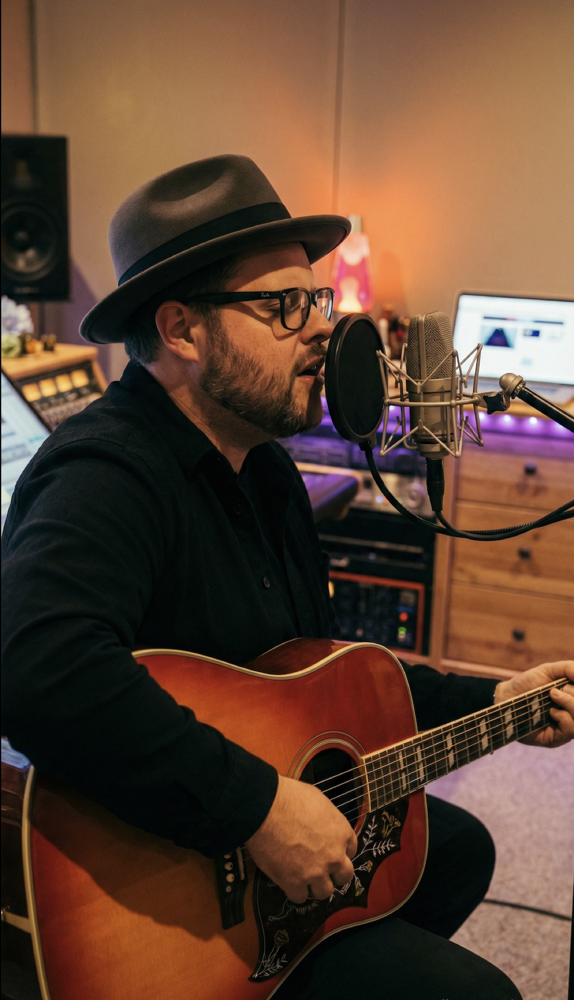

NO. 01 / PLAY LOUD
“Songs for people who have lived long enough to know better—and still turn the amp up.”
MAKE SOME
NOISE.

ON RECORD.
Selected releases from the catalogue.


STORIES & MEDIA.
Read the stories behind the project and coverage from music publications and creators.
Personal stories about making music in your 40s, building an independent artist project and the strange events behind the songs.
Read on Medium ↗ The Gatekeeper Space A High-Voltage Collision of 2000s Emo Nostalgia and Modern GritA review of “The Bit That Breaks”, covering its pop-punk urgency, emo vulnerability and modern alternative-rock production.
Read review ↗ Click Roll Boom Comes in Threes — Single ReviewA dedicated Click Roll Boom review of the Grant Morriss single “Comes in Threes”.
Read review ↗
Where the songs stop being mine
and start belonging to the room.
TOUR DATES.
Five rooms. Four cities. One loud month.


25+ YEARSAROUND MUSIC
THE LONG
WAY ROUND.
London-based. Raised on records. Still chasing the feeling of finding the right song at exactly the right time.
Grant Morriss is a songwriter, multi-instrumentalist and long-time studio obsessive. His music moves between quiet observation and anthemic release—alternative rock, emo and pop-punk shaped by lived experience rather than nostalgia.
Personal, autobiographical and occasionally surreal, the songs pair sharp humour and social commentary with widescreen guitars, strong hooks and the belief that vulnerability sounds better turned up.
Infectious, energetic and upbeat.BBC RADIO MANCHESTER
HONEST SONGS.
WRITTEN TO CONNECT.